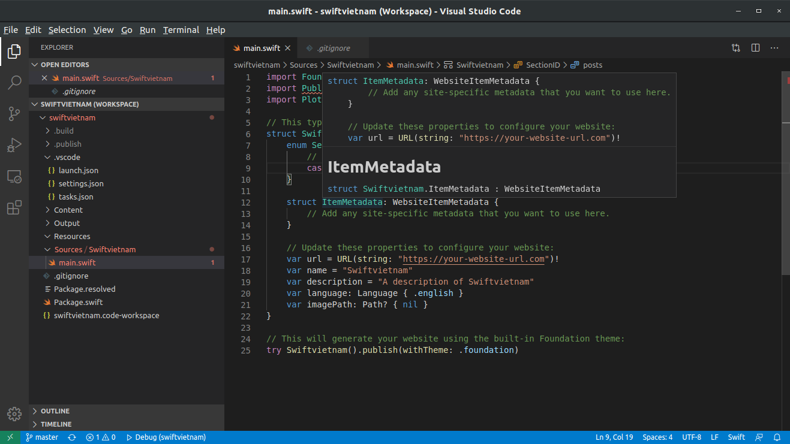
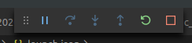

Publishing a blog using Swift for Linux (Ubuntu 18.04)
Publish is a static site generator built with Swift, created by the famous John Sundell to run his blog.
This tutorial is going to show you how to install Publish on a Linux machine running Ubuntu 18.04 LTS and how to publish the generated site to Github Pages and connect it with a custom domain.
As you might guess, this blog post is generated by Publish, and hosted on Github Pages under the domain https://swiftvietnam.com. The project is open-sourced on Github: https://github.com/antranapp/swiftvietnam
1. Install Swift 5.2.2 on Ubuntu 18.04 LTS
The following steps show how to install the currently latest version of Swift 5.2.2 on Ubuntu 18.04 LTS. Since Swift supports other Linux distributions too, you should be able to install Swift on most of the Linux systems.
Step 1: Install dependencies
clang and libicu-dev are required as dependencies for running Swift on Linux machines
clangprovides tooling infrastructure for programming languages in the C programming languages. It acts as a compiler.libicu-devprovides full-featured Unicode and locale support. This allows for Unicode to be used in our code.
We can install those dependencies by running the following code:
sudo apt install clang libicu-dev
Step 2: Download the Swift binary
Apple releases many pre-compiled binary builds for Swift on the official Swift website.
We are going to download the build for Ubuntu 18.04 LTS using the following commands and unpack it into swift folder:
mkdir ~/swift
cd ~/swift
wget https://swift.org/builds/swift-5.2.2-release/ubuntu1804/swift-5.2.2-RELEASE/swift-5.2.2-RELEASE-ubuntu18.04.tar.gz
tar -xvzf swift-5.2.2-RELEASE*
Step 3: Add swift binary to PATH
To execute swift command from anywhere, we need to add the path to the swift binary into our PATH environment variable.
We can find the path to the swift binary using pwd command:
cd ~/swift/swift-5.2.2-RELEASE-ubuntu18.04/usr/bin
pwd
Copy the output of the above command and add it into our PATH, ideally in .bashrc file to keep the change permanently.
export PATH=$PATH:$HOME/bin/swift-5.2.2-RELEASE-ubuntu18.04/usr/bin
Remember to restart the session or run source ~/.bashrc before continue.
Step 4: Testing
Now you test if you can call swift command.
swift -v
The output should be something like:
Swift version 5.2.2 (swift-5.2.2-RELEASE)
Target: x86_64-unknown-linux-gnu
2. Install Visual Studio Code plugin (optional)
Since Xcode is not available for Linux system, and we are going to build our website using Swift, it would be good if we have some kind of IDE to aid the process.
Currently, we have 3 options for swift IDEs:
- Option 1: Using any text editors or IDEs to edit the source code and run
swift buildorpublish generatefrom command line to build our project. Probably, we will not have any code highlighting, source code references, auto-completion and IDE integrations. - Option 2: CLion from JetBrains: It is actually a C/C++ IDE but it has a plugin to support Swift source code. All JetBrains IDEs are excellent for sure, but it is not free.
- Option 3: Using Visual Studio Code together with SourceKit-LSP to have a good enough IDE to start writing and debugging Swift code.
I'm going to show you how to do the option 3: integration of SourceKit-LSP in Visual Studio Code.
Step 1: Build SourceKit-LSP
Apple announced the SourceKit-LSP in August 2018 and released the open-source project in November 2018. As written in its official repository:
SourceKit-LSP is an implementation of the Language Server Protocol (LSP) for Swift and C-based languages. It provides features like code-completion and jump-to-definition to editors that support LSP. SourceKit-LSP is built on top of
sourcekitdandclangdfor high-fidelity language support, and provides a powerful source code index as well as cross-language support. SourceKit-LSP supports projects that use the Swift Package Manager.
We are going to build SourceKit-LSP from its source, and copy the built binary to /usr/local/bin
git clone https://github.com/apple/sourcekit-lsp.git
cd sourcekit-lsp
sudo apt install libsqlite3-dev libncurses5-dev
swift build -Xcxx -I${HOME}/bin/swift-5.2.2-RELEASE-ubuntu18.04/usr/lib/swift -Xcxx -I${HOME}/bin/swift-5.2.2-RELEASE-ubuntu18.04/usr/lib/swift/Block
sudo mv .build/x86_64-unknown-linux-gnu/debug/sourcekit-lsp /usr/local/bin
Note:
- You need to use the correct path to your
swiftbinary in the command. I used mine here for easy understanding. - You might need to install additional dependencies depending on what packages are available on your machines.
Step 2: Build VSCode extension
If you don't have Visual Studio Code installed yet, please follow this instruction to install it. The most simple way is to use snap
sudo snap install --classic code
We also need node and npm to build our custom Visual Studio Code extension. The installation instruction for Ubuntu can be found here
curl -sL https://deb.nodesource.com/setup_12.x | sudo -E bash -
sudo apt-get install -y nodejs
Now, inside the sourcekit-lsp folder, run the following commands to create and install the extension for Visual Studio Code.
cd Editors/vscode
npm run createDevPackage
code --install-extension out/sourcekit-lsp-vscode-dev.vsix
3. Install Publish
We will now install Publish from its source code:
git clone https://github.com/JohnSundell/Publish.git
cd Publish
make
If you get permission errors like this:
install .build/release/publish-cli /usr/local/bin/publish
install: cannot create regular file '/usr/local/bin/publish': Permission denied
Makefile:2: recipe for target 'install' failed
You should run install command with sudo instead:
sudo install .build/release/publish-cli /usr/local/bin/publish
Now if you run publish from the command line. You will see something like this:
4. Create a new website
Step 1: Create a new project
Now we can use publish command to create a new website:
mkdir SwiftVietnam
publish new
Open the newly created folder in Visual Studio Code:
cd SwiftVietnam
code .
To connect to the Swift Toolchain and SourceKit-LSP with Visual Studio Code, we need to create some setting files under .vscode in our workspace:
- settings.json: set the path to the swift tool chain
{
"sourcekit-lsp.toolchainPath": "$HOME/bin/swift-5.2.2-RELEASE-ubuntu18.04/usr/bin"
}
With this, we will be able to see class references for our Swift code:
- tasks.json: set the configuration so that we can run the project directly from VSCode by pressing
F5
{
"version": "2.0.0",
"tasks": [
{
"label": "swift-build",
"type": "shell",
"command": "swift build"
}
]
}
We can also configure the debugger for our Swift project by installing CodeLLDB extension and creating launch.json in .vscode folder:
- launch.json:
{
"version": "0.2.0",
"configurations": [
{
"type": "lldb",
"request": "launch",
"name": "Debug",
"program": "${workspaceFolder}/.build/debug/SwiftVietnam",
"args": [],
"cwd": "${workspaceFolder}",
"preLaunchTask": "swift-build"
}
]
}
Now we can use running and debugging capabilities of VSCode for our project: 
5. Test and publish to Github Pages
Step 1: Testing locally
To test the site locally, we can run:
publish run
The generated website will be created in the Output folder. And a local server will be started at http://localhost:8000. We can now just open that address in our browser to review the site.
Step 2: Setting up a custom domain
If you want to use a custom domain with your Github Pages, please follow the official instruction from Github to customize the domain name.
Step 3: Push Output folder to remote
Publish has an extensible DeploymentMethod API which can be used to implement different deployment methods. Unfortunately, deployment to Github Pages is not a built-in feature. At the time of writing, there is a pull request which implements GithubPages Deploymentmethod, but it is still being developed.
Since publishing to GitHub pages is quite easy, we can alternatively write some shell scripts to push code from the Output folder to the gh-pages branch of our repository and configure the repository to serve our static website from the gh-pages branch.
The deploy.sh script looks like following:
#!/bin/sh
## Rebuild the website
publish generate
## Add custom domain CNAME
echo "swiftvietnam.com" > Output/CNAME
## Add files to git
git add .
git commit -m "Update production"
git push origin master
## Deploy to gh-pages
echo "--> Deploy to live server -->"
git subtree push --prefix Output origin gh-pages
6. Conclusion:
In this tutorial, we have created a foundation for our static-generated website by finishing many configuration tasks:
- Created a complete swift development environment on Ubuntu 18.04 LTS with Visual Studio Code and SourceKit-LSP
- Installed
Publishtool to create and publish our website - Tested and published the first version of our website to Github Pages, running on a custom domain.
In future posts, we will investigate how to use Plot to change the UI, to use Splash for syntax highlighting for Swift and to create different sections for our website.
Further in-depth resources and explanations can be found in the following links: